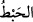

boşa çıkardı, iptal etti” demektir. Râğıb Isfahânî der ki: Bu kelimenin aslı (
) olup
hayvanın çok et yiyip karnının şişmesi ve kendinden hiçbir şey çıkmaması anlamına
gelir.
Baklî, el-‘Arâis adlı eserinde der ki: Bu edeplendirme ile Cenâb-ı Hak bize
Habîb’inin gönlünün çok latîf olmasından ve dâimâ Rabb-i Zü’l-Celâl’in melekûtunu
murâkabe etmesinden dolayı yüksek seslerden etkilendiğini bildirmiştir. Bu da onun
sürekli Allah ile meşgûl olup bütün ihtimâmını O’nun huzûrunda olmaya verdiği içindir.
Biri kendisinin yanında yüksek sesle konuşunca kalbi incinir, göğsü daralırdı. Sanki
sırrı, bir an için ezel meydanlarında dolaşmaktan geri kalırdı. Cenâb-ı Hak onları bu
hususta uyardı ve böyle bir şey karşısında korku duymaları gerektiğini bildirdi.
Rasûlullah (s.a.)’in gönlünü bulandırmak amellerin boşa gitmesine sebeptir. Arştan arza
kadar hiçbir şeyin onun hatırı karşısında zerre miktarı kıymeti yoktur. Enbiyâ ve
evliyânın gönüllerinin muhabbette toplanması Allah Teâlâ’ya ins ü cinnin bütün
amellerinden daha sevimlidir. Yine bu âyette Rasûlullah’a olan ihtiramın muhâfazası ve
evliyâullah karşısında müridlerin edeplendirilmesi söz konusudur.
Fakir [Bursevî] der ki: Efendimiz (s.a.)’in letâfetinden dolayı ölüm kendisine daha
şiddetli idi. Çünkü latîf, kesîfin etkilenmediği şeylerden etkilenir. Nitekim bazıları
şöyle demiştir: Bedevî Araplardan bazı kimseler gördük ki, yöneticileri onlardan
birinin derisini yüzüyor o ise hiçbir tepki vermiyor. Eğer evliyâullahın en büyüğünün
derisini yüzseler, his duygusunu ortadan kaldıracak bir müşâhede ile aklı alınması hariç,
muhakkak çığlık atardı.
Buradan anlaşılıyor ki, cehrin de hafânın da ayrı yeri var. Sert yapılı olana sesli ve
âşikar; yumuşak yapılı olana ise sessiz konuşmak, hitap etmek uygundur. Nitekim cehrî
ve hafî zikir halinde de durum böyledir. Herkes müşâhede sâhibi değildir.
Sehl der ki: Hz. Peygamber (s.a.) ile ancak soru sormak için konuşun. Sahâbe-i kirâm
(r.a.), bu âyet-i kerimenin nüzûlünden sonra Rasûlullah (s.a.) ile fısıltıya yakın bir sesle
konuşmuşlardır. Bazı âlimler Rasûlullah (s.a.)’in kabri başında yüksek sesle konuşmayı
da mekruh saymışlardır. Çünkü o, kabrinde diridir. Yine Hz. Peygamber (s.a.)’e selâm
vermek için onunla karşı karşıya gelindiğinde dört zirâ’dan (yaklaşık 3 m.) daha yakın
bir mesafede durmak mekruh görülmüştür. Yine bazı âlimler fakîhlere tazîm bakımından
onların meclislerinde yüksek sesle konuşulmasını da hoş görmemişlerdir. Çünkü onlar
peygamber vârisidirler.
Süleyman b. Harb der ki: Bir kimse Hammâd bin Zeyd’in yanında Rasûlullah
(s.a.)’den hadîs rivâyet ederken güldü. Hammâd kızarak şöyle dedi: Rasûlullah (s.a.)
ölü iken onun hadîsi söylendiğinde sesi yükseltmeyi, o hayatta iken huzûrunda sesi
yükseltmek gibi görürüm. Sonra da kalktı ve o gün hadîs rivâyet etmedi. Hâsılı, bu
olayda hadîsin ve muhaddisin huzurunda sesi yükseltmek söz konusudur. Şu kadar var ki
gülme; alay ve istihzâdan hâlî olmaz. Ciddî bir meclis ise böyle bir şeyi kaldırmaz.
Selef-i sâlihîn bugünün vaaz, ders ve mevlid vb. bir meclise gelselerdi, görecekleri
münker davranışlar ve sû-i edebden dolayı ânında dışarı çıkarlardı.